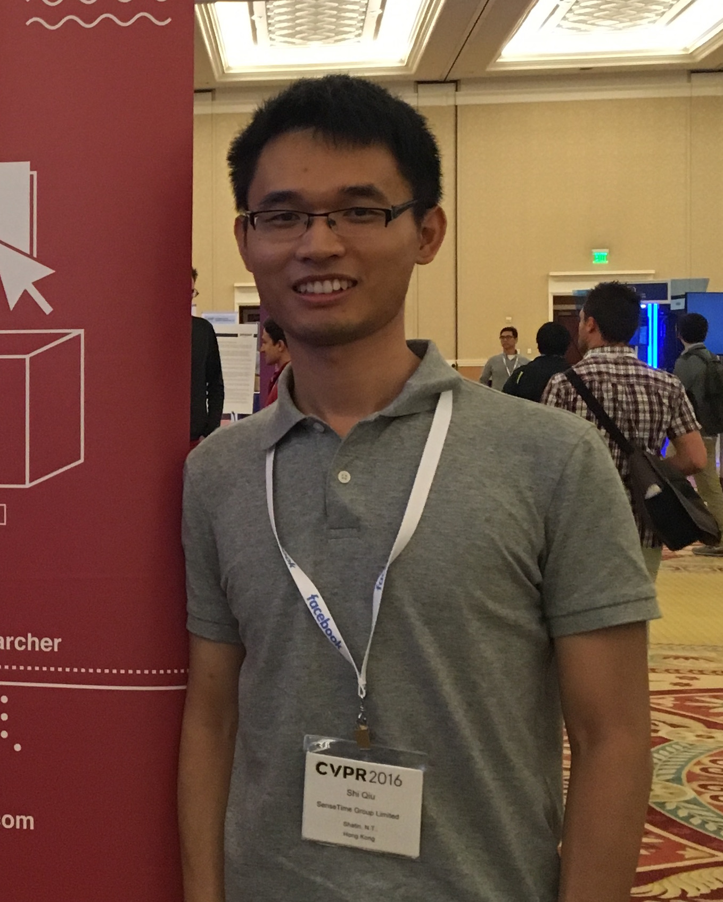
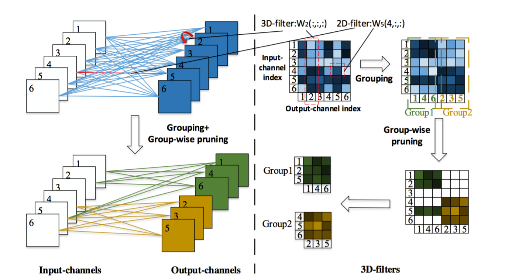
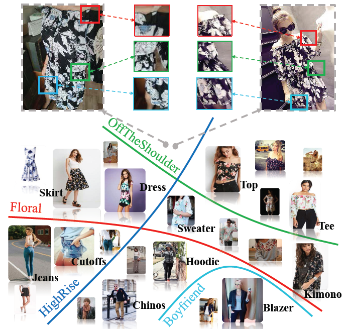
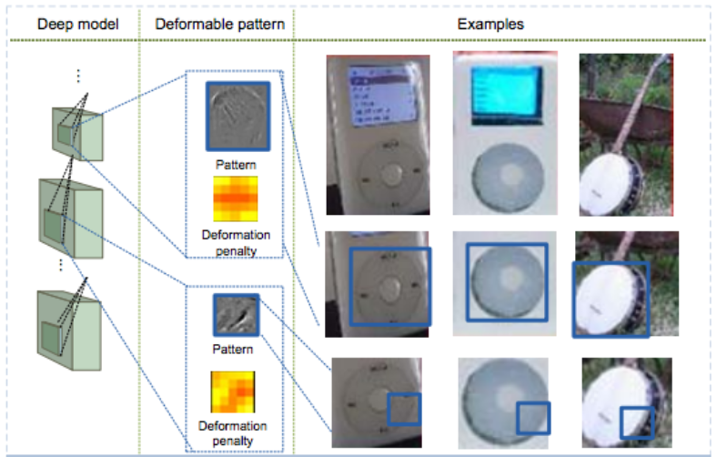
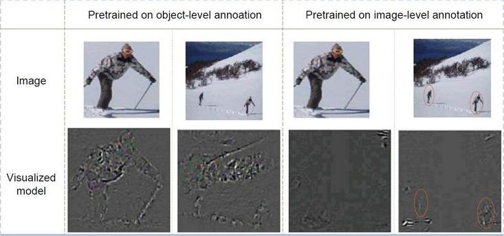
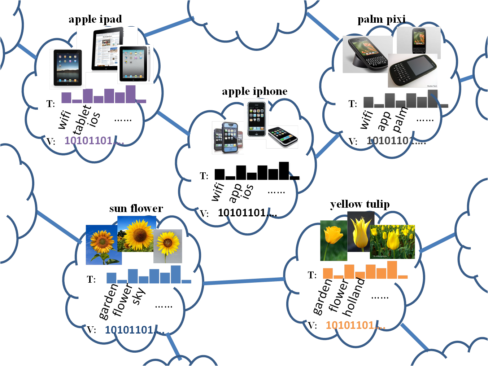
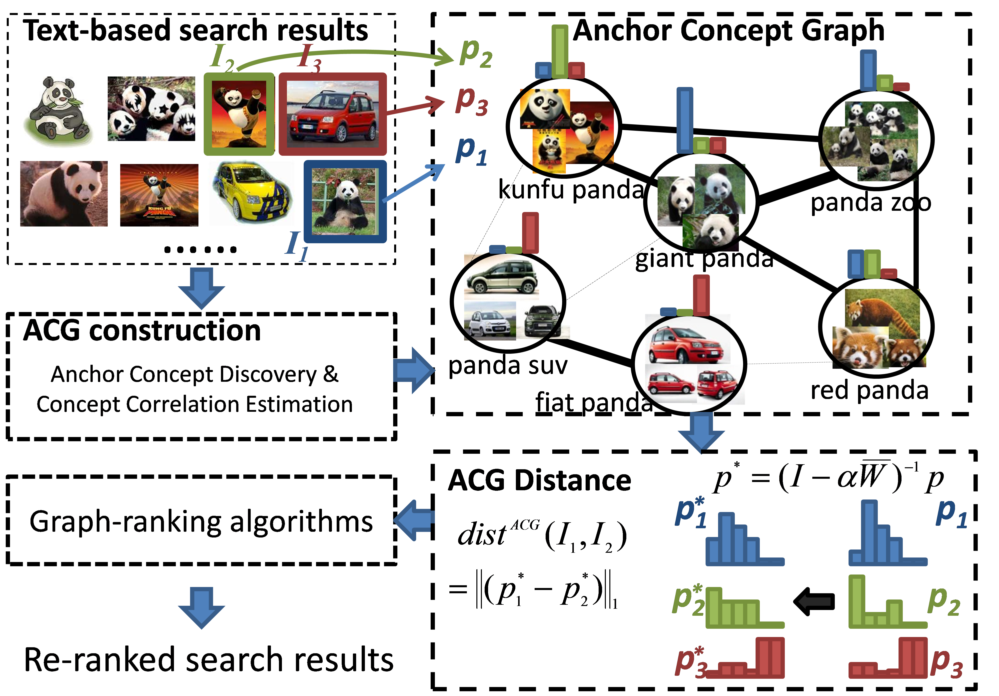
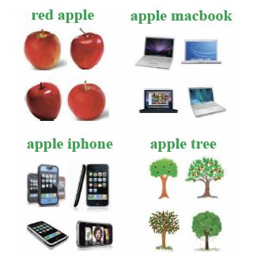

Shi Qiu 邱石 |
 |
Research Scientist
Unit 226-230, 2/F, Core Building No. 2, |
|
| Email: arthur DOT qiushi AT gmail DOT com Check out my CV. Find me on Github Google Scholar Linkedin Facebook |
I am currently working as a computer vision research scientist at SenseTime Group Limited. I finished my Ph.D. degree in the MMLab of the Chinese University of Hong Kong (CUHK) in 2014, under the supervision of Professor Xiaoou Tang and Professor Xiaogang Wang. I received my Bachelor degree from the Department of Electronic Engineering, Tsinghua Univeristy, Beijing in 2009.
My research interests lie broadly in the area of computer vision, machine learning, and multimedia. My recent research focus includes fashion analysis, image search, and video understanding.
|  | Accelerating Convolutional Neural Networks by Group-wise 2D-filter Pruning Niange Yu, Shi Qiu, Xiaolin Hu, Jianmin Li, Proceedings of International Joint Conference on Neural Networks (IJCNN 2017) (Oral) [Paper] |
|
|  | DeepFashion: Powering Robust Clothes Recognition and Retrieval with Rich Annotations Ziwei Liu, Ping Luo, Shi Qiu, Xiaogang Wang, Xiaoou Tang, Proceddings of IEEE Conference on Computer Vision and Pattern Recognition (CVPR 2016) . [Paper] [Project] [Dataset] [Demo] |
|
|  | DeepID-Net: Object Detection with Deformable Part Based Convolutional Neural Networks Wanli Ouyang, Xingyu Zeng, Xiaogang Wang, Shi Qiu, Ping Luo, Yonglong Tian, Hongsheng Li, Shuo Yang, Zhe Wang, Hongyang Li, Kun Wang, Junjie Yan, Chen-Change. Loy, Xiaoou Tang, IEEE Transactions on Pattern Analysis and Machine Intelligence (PAMI) . [Paper] |
|
|  | DeepID-Net: Deformable Deep Convolutional Neural Networks for Object Detection (Details on how our team achieved #2 in the ILSVRC Object Detection 2014) Wanli Ouyang, Xingyu Zeng, Xiaogang Wang, Shi Qiu, Ping Luo, Yonglong Tian, Hongsheng Li, Shuo Yang, Zhe Wang, Chen-Change. Loy, Xiaoou Tang, Proceedings of IEEE Conference on Computer Vision and Pattern Recognition (CVPR 2015) . [Paper] [Project, Models] [Labeling Tool] |
|
|  | Visual Semantic Complex Network for Web Images Shi Qiu, Xiaogang Wang, Xiaoou Tang, Proceedings of IEEE International Conference on Computer Vision (ICCV 2013) . [Paper] [Project] [Poster] |
|
|  | Anchor Concept Graph Distance for Web Image Re-ranking Shi Qiu, Xiaogang Wang, Xiaoou Tang Proceedings of ACM Multimedia Conference (MM 2013). [Paper] [Poster] |
|
|  | Web Image Re-ranking Using Query-Specific Semantic Signatures Xiaogang Wang, Shi Qiu, Ke Liu, Xiaoou Tang, IEEE Transactions on Pattern Analysis and Machine Intelligence (PAMI). [Paper] [Project] [Dataset] |
|
Older Projects | | |
| THU and ICRC at TRECVID 2008 Y Liang, X Liu, Z Wang, J Li, B Cao, Z Cao, Z Dai… - TRECVID, 2008 [Techical report] |
||
| Multimodal sensing for pediatric obesity applications Murali Annavaram, Nenad Medvidovic, Urbashi Mitra, Shrikanth Narayanan, Gaurav Sukhatme, Zhaoshi Meng, Shi Qiu, Rohit Kumar, Gautam Thatte, Donna Spruijt-Metz Proceedings of UrbanSense08 [Paper] |
||
|
Hong Kong PhD Fellowship, 2010-2013 Distinguished Graduate Award, Tsinghua University, 2009 Outstanding Thesis Award, Tsinghua University, 2009 First Class Scholarship for Academic Excellence, Tsinghua University, 2006, 2008 National Scholarship of Overall Excellence, 2007 Silver Medal in Chinese Physics Olympiad (CPhO), 2004 |
Last update: Jun. 10, 2017